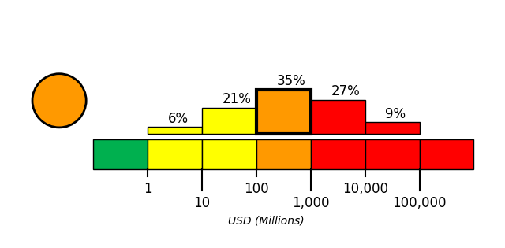

Introduction
On June 8, 2026, at approximately 0:37 local time, a magnitude 7.8 earthquake, with a depth of 55 km, struck 26 km Southwest of Kablalan, Philippines. The coordinate of epicenter of the earthquake was 5.59N, 125.05E.
The Philippine Sea plate is bordered by the larger Pacific and Eurasia plates and the smaller Sunda plate. The Philippine Sea plate is unusual in that its borders are nearly all zones of plate convergence. The Pacific plate is subducted into the mantle, south of Japan, beneath the Izu-Bonin and Mariana island arcs, which extend more than 3,000 km along the eastern margin of the Philippine Sea plate. This subduction zone is characterized by rapid plate convergence and high-level seismicity extending to depths of over 600 km. In spite of this extensive zone of plate convergence, the plate interface has been associated with few great (M>8.0) ‘megathrust’ earthquakes. This low seismic energy release is thought to result from weak coupling along the plate interface (Scholz and Campos, 1995). These convergent plate margins are also associated with unusual zones of back-arc extension (along with resulting seismic activity) that decouple the volcanic island arcs from the remainder of the Philippine Sea Plate (Karig et al., 1978; Klaus et al., 1992).
South of the Mariana arc, the Pacific plate is subducted beneath the Yap Islands along the Yap trench. The long zone of Pacific plate subduction at the eastern margin of the Philippine Sea Plate is responsible for the generation of the deep Izu-Bonin, Mariana, and Yap trenches as well as parallel chains of islands and volcanoes, typical of circum-pacific island arcs. Similarly, the northwestern margin of the Philippine Sea plate is subducting beneath the Eurasia plate along a convergent zone, extending from southern Honshu to the northeastern coast of Taiwan, manifested by the Ryukyu Islands and the Nansei-Shoto (Ryukyu) trench. The Ryukyu Subduction Zone is associated with a similar zone of back-arc extension, the Okinawa Trough. At Taiwan, the plate boundary is characterized by a zone of arc-continent collision, whereby the northern end of the Luzon island arc is colliding with the buoyant crust of the Eurasia continental margin offshore China.
Along its western margin, the Philippine Sea plate is associated with a zone of oblique convergence with the Sunda Plate. This highly active convergent plate boundary extends along both sides the Philippine Islands, from Luzon in the north to the Celebes Islands in the south. The tectonic setting of the Philippines is unusual in several respects: it is characterized by opposite-facing subduction systems on its east and west sides; the archipelago is cut by a major transform fault, the Philippine Fault; and the arc complex itself is marked by active volcanism, faulting, and high seismic activity. Subduction of the Philippine Sea Plate occurs at the eastern margin of the archipelago along the Philippine Trench and its northern extension, the East Luzon Trough. The East Luzon Trough is thought to be an unusual example of a subduction zone in the process of formation, as the Philippine Trench system gradually extends northward (Hamburger et al., 1983). On the west side of Luzon, the Sunda Plate subducts eastward along a series of trenches, including the Manila Trench in the north, the smaller less well-developed Negros Trench in the central Philippines, and the Sulu and Cotabato trenches in the south (Cardwell et al., 1980). At its northern and southern terminations, subduction at the Manila Trench is interrupted by arc-continent collision, between the northern Philippine arc and the Eurasian continental margin at Taiwan and between the Sulu-Borneo Block and Luzon at the island of Mindoro. The Philippine fault, which extends over 1,200 km within the Philippine arc, is seismically active. The fault has been associated with major historical earthquakes, including the destructive M7.6 Luzon earthquake of 1990 (Yoshida and Abe, 1992). A number of other active intra-arc fault systems are associated with high seismic activity, including the Cotabato Fault and the Verde Passage-Sibuyan Sea Fault (Galgana et al., 2007).
Relative plate motion vectors near the Philippines (about 80 mm/yr) is oblique to the plate boundary along the two plate margins of central Luzon, where it is partitioned into orthogonal plate convergence along the trenches and nearly pure translational motion along the Philippine Fault (Barrier et al., 1991). Profiles B and C reveal evidence of opposing inclined seismic zones at intermediate depths (roughly 70-300 km) and complex tectonics at the surface along the Philippine Fault.
Several relevant tectonic elements, plate boundaries and active volcanoes, provide a context for the seismicity presented on the main map. The plate boundaries are most accurate along the axis of the trenches and more diffuse or speculative in the South China Sea and Lesser Sunda Islands. The active volcanic arcs (Siebert and Simkin, 2002) follow the Izu, Volcano, Mariana, and Ryukyu island chains and the main Philippine islands parallel to the Manila, Negros, Cotabato, and Philippine trenches.
Seismic activity along the boundaries of the Philippine Sea Plate (Allen et al., 2009) has produced 7 great (M>8.0) earthquakes and 250 large (M>7) events. Among the most destructive events were the 1923 Kanto, the 1948 Fukui and the 1995 Kobe (Japan) earthquakes (99,000, 5,100, and 6,400 casualties, respectively), the 1935 and the 1999 Chi-Chi (Taiwan) earthquakes (3,300 and 2,500 casualties, respectively), and the 1976 M7.6 Moro Gulf and 1990 M7.6 Luzon (Philippines) earthquakes (7,100 and 2,400 casualties, respectively). There have also been a number of tsunami-generating events in the region, including the Moro Gulf earthquake, whose tsunami resulted in more than 5000 deaths.

Building Damage
Following the June 8 magnitude 7.8 earthquake in the southern Philippines, building damage was reported near the epicenter, including around General Santos City, where footage showed several buildings partially collapsing [1][2]. General Santos, a city of about 700,000 people, was described as the worst affected area while assessments were still ongoing; shops and buildings had broken signs and glass, and some were reduced to piles of concrete and rubble [7]. Several mostly low-rise buildings in hard-hit General Santos collapsed or sustained heavy damage [5]. Verified footage showed a shopping centre with a Jollibee fast-food restaurant collapsing into rubble in General Santos City, while an unoccupied school building crumpled in another location [1]. Additional reported damage included damaged convenience stores, cracked building walls, damage and smoke near General Santos International Airport, and collapsed or severely damaged small buildings including a supermarket, warehouse, grade school, and a popular hamburger joint [3][4][5][9]. Collapsing buildings and falling debris caused many deaths, including in a damaged mosque in South Cotabato, Davao Occidental, and Balut Island, while more than 200 injuries occurred mostly in ruined buildings [6][8]. Teresito Bacolcol warned people to seek advice before returning to damaged buildings and houses because they could collapse due to aftershocks [9].
Infrastructure Impact
Airport infrastructure: General Santos International Airport in General Santos, Philippines reportedly sustained massive damage after the powerful earthquake [10]. Multiple reports citing the Civil Aviation Authority of the Philippines stated that the international airport in General Santos was temporarily shut due to the earthquake and that 17 domestic flights were canceled [5][11][12][13][8][14][15][16][6][17][18]. Additional reports likewise stated that the airport was temporarily shut and that 17 domestic flights were canceled, without providing a more specific shutdown duration beyond “temporarily” [9][19][20][21][22][23][24][25][26][27][28][29][30][31][32][33][34][35][36][37].
Resilience and Recovery
Reported human impacts in Mindanao included at least 37 deaths and more than 200 injuries in one account, while other official and media reports varied, including preliminary civil-defence figures under verification of 32 deaths and 134 injuries across Mindanao, mostly from falling debris and landslides, and a separate report of at least 35 deaths and more than 100 injuries [42][7][40]. Within the Soccsksargen region, 12 fatalities and 129 injuries were reported, and a quake-triggered landslide in Sarangani province killed 13 villagers [41][9]. In General Santos, a port city of more than 700,000 people and a regional tuna-export hub, missing-person reports differed, with some accounts citing at least 12 missing and others citing at least four [11][5]. Tsunami-related protective actions were initiated across affected coastal areas after the offshore earthquake [47][48]. The Philippine Institute of Volcanology and Seismology issued a tsunami warning for nine coastal provinces and strongly advised residents to evacuate to higher ground or move farther inland [47]. President Ferdinand Marcos Jr. called for immediate evacuation of coastal residents and suspended school classes in affected areas [43]. Indonesia’s disaster agency instructed officials in high-risk areas, including Manado City, Gorontalo province, and the Sangihe archipelago, to guide orderly evacuations to higher ground [39]. In North Sulawesi, tsunami waves up to 0.75 m were detected, and residents, including those in the remote Sangihe Islands, moved to safer areas [7]. Tsunami warnings were cancelled after more than six hours in the southern Philippines, northern Indonesia, and Sabah, where residents had been told to evacuate [46]. Emergency response actions included the mobilisation of Philippine military and disaster-response teams, while authorities continued verifying casualty reports [7]. Manila also stepped up search-and-rescue operations as the death toll rose in early reporting [38]. President Marcos Jr. ordered class cancellations and directed disaster-response agencies to begin work in quake-hit provinces, stating that the national government was mobilising for Mindanao [9]. Community disruption was reported near the epicentre: in Sarangani province, power and telecommunications were down and school classes were suspended, while in General Santos aftershocks were felt, authorities assessed damage reports, and residents left homes to seek safety after falling furniture and damaged appliances were reported [44]. Several foreign governments expressed sympathies and readiness to assist the Philippines after the earthquake [45].
PAGER Estimates
USGS PAGER tool estimated the fatalities to be in the orange alert level, which is most likely between 100 and 1,000 with a probability of 38%.
USGS PAGER tool estimated the economic loss to be in the orange alert level, which is most likely between 100 and 1,000 million dollars with a probability of 35%.


References
- [1] straitstimes.com - https://www.straitstimes.com/asia/se-asia/earthquake-of-magnitude-7-3-strikes-mindanao-philippines-gfz-says
- [2] bnonews.com - https://bnonews.com/index.php/2026/06/major-8-2-earthquake-strikes-philippines-tsunami-threat-issued
- [3] oneindia.com - https://www.oneindia.com/international/7-8-magnitude-earthquake-shakes-philippines-tsunami-warning-issued-014-8111523.html
- [4] m.economictimes.com - https://m.economictimes.com/us/news/philippines-earthquake-in-videos-watch-buildings-collapse-airport-damaged-as-massive-7-8-quake-strikes-mindanao/articleshow/131576781.cms
- [5] thehindu.com - https://www.thehindu.com/news/international/earthquake-strikes-mindanao-in-philippines/article71074937.ece
- [6] springfieldnewssun.com - https://www.springfieldnewssun.com/nation-world/7-8-magnitude-earthquake-shakes-part-of-southern-philippines-tsunami-possible-for-some-coasts/article_af5dccb6-f90c-5ec6-bc8a-faf7c9f8ed36.html
- [7] businesstimes.com.sg - https://www.businesstimes.com.sg/international/8-2-magnitude-earthquake-strikes-mindanao-philippines-tsunami-warning-issued
- [8] abcnews.com - https://abcnews.com/International/wireStory/78-magnitude-earthquake-shakes-part-southern-philippines-tsunami-133670776
- [9] houstonpublicmedia.org - https://www.houstonpublicmedia.org/npr/2026/06/08/g-s1-126830/a-7-8-magnitude-earthquake-rocks-the-southern-philippines
- [10] lokmattimes.com - https://www.lokmattimes.com/international/philippines-earthquake-buildings-collapse-after-magnitude-82-quake-strikes-off-mindanao-coast-tsunami-alert-issued-a517
- [11] local.newsbreak.com - https://local.newsbreak.com/new-york-post-509648/4697571076073-a-7-8-magnitude-quake-in-the-philippines-kills-at-least-16-fells-buildings-and-sets-off-a-tsunami
- [12] aol.co.uk - https://www.aol.co.uk/articles/7-8-magnitude-earthquake-shakes-020228552.html
- [13] nypost.com - https://nypost.com/2026/06/07/world-news/7-8-magnitude-earthquake-shakes-part-of-southern-philippines-tsunami-possible-for-some-coasts
- [14] abc7.com - https://abc7.com/post/78-magnitude-earthquake-shakes-part-southern-philippines-tsunami-possible-coasts/19254205
- [15] abc7news.com - https://abc7news.com/post/78-magnitude-earthquake-shakes-part-southern-philippines-tsunami-possible-coasts/19254205
- [16] abc7chicago.com - https://abc7chicago.com/post/78-magnitude-earthquake-shakes-part-southern-philippines-tsunami-possible-coasts/19254205
- [17] abc7ny.com - https://abc7ny.com/post/78-magnitude-earthquake-shakes-part-southern-philippines-tsunami-possible-coasts/19254205
- [18] abcnews.com - https://abcnews.com/Technology/wireStory/78-magnitude-earthquake-shakes-part-southern-philippines-tsunami-133670777
- [19] wlrn.org - https://www.wlrn.org/npr-breaking-news/2026-06-07/a-7-8-magnitude-earthquake-rocks-the-southern-philippines
- [20] kpbs.org - https://www.kpbs.org/news/international/2026/06/07/a-7-8-magnitude-earthquake-rocks-the-southern-philippines
- [21] kjzz.org - https://www.kjzz.org/npr-top-stories/2026-06-07/a-7-8-magnitude-earthquake-rocks-the-southern-philippines
- [22] wunc.org - https://www.wunc.org/2026-06-07/a-7-8-magnitude-earthquake-rocks-the-southern-philippines
- [23] ideastream.org - https://www.ideastream.org/2026-06-07/a-7-8-magnitude-earthquake-rocks-the-southern-philippines
- [24] nhpr.org - https://www.nhpr.org/2026-06-07/a-7-8-magnitude-earthquake-rocks-the-southern-philippines
- [25] wusf.org - https://www.wusf.org/2026-06-07/a-7-8-magnitude-earthquake-rocks-the-southern-philippines
- [26] mainepublic.org - https://www.mainepublic.org/npr-news/2026-06-07/a-7-8-magnitude-earthquake-rocks-the-southern-philippines
- [27] wamc.org - https://www.wamc.org/2026-06-07/a-7-8-magnitude-earthquake-rocks-the-southern-philippines
- [28] arabnews.com - https://www.arabnews.com/node/2646327/world
- [29] hawaiipublicradio.org - https://www.hawaiipublicradio.org/national-international/2026-06-07/a-7-8-magnitude-earthquake-rocks-the-southern-philippines
- [30] wfae.org - https://www.wfae.org/world/2026-06-07/a-7-8-magnitude-earthquake-rocks-the-southern-philippines
- [31] wyomingpublicmedia.org - https://www.wyomingpublicmedia.org/2026-06-07/a-7-8-magnitude-earthquake-rocks-the-southern-philippines
- [32] vpm.org - https://www.vpm.org/npr-news/npr-news/2026-06-07/a-7-8-magnitude-earthquake-rocks-the-southern-philippines
- [33] wxxinews.org - https://www.wxxinews.org/npr-news/2026-06-07/a-7-8-magnitude-earthquake-rocks-the-southern-philippines
- [34] boisestatepublicradio.org - https://www.boisestatepublicradio.org/2026-06-07/a-7-8-magnitude-earthquake-rocks-the-southern-philippines
- [35] news.wfsu.org - https://news.wfsu.org/npr-news/2026-06-07/a-7-8-magnitude-earthquake-rocks-the-southern-philippines
- [36] knpr.org - https://knpr.org/npr/2026-06-07/a-7-8-magnitude-earthquake-rocks-the-southern-philippines
- [37] wosu.org - https://www.wosu.org/npr-news/2026-06-07/a-7-8-magnitude-earthquake-rocks-the-southern-philippines
- [38] srnnews.com - https://srnnews.com/earthquake-of-magnitude-7-3-strikes-mindanao-philippines-gfz-says
- [39] vietnam.vn - https://www.vietnam.vn/en/dong-dat-manh-7-8-do-o-philippines-it-nhat-19-nguoi-chet-da-xuat-hien-song-than-cao-1-4m
- [40] channelnewsasia.com - https://www.channelnewsasia.com/asia/philippines-earthquake-mindanao-magnitude-8-2-gfz-6167966
- [41] rnz.co.nz - https://www.rnz.co.nz/news/world/597553/earthquake-of-magnitude-7-point-8-strikes-off-southern-philippines
- [42] the-independent.com - https://www.the-independent.com/travel/news-and-advice/is-it-safe-japan-philippines-earthquake-b2991594.html
- [43] scoop.co.nz - https://www.scoop.co.nz/stories/WO2606/S00106/philippines-earthquake-on-first-day-back-at-school-affects-3-million-students-as-rescue-efforts-underway.htm
- [44] deccanherald.com - https://www.deccanherald.com/world/asia/78-magnitude-earthquake-strikes-off-southern-philippines-tsunami-alert-issued-4031067
- [45] ph.headtopics.com - https://ph.headtopics.com/news/philippines-receives-international-aid-after-deadly-84262086
- [46] thestar.com.my - https://www.thestar.com.my/news/world/2026/06/08/earthquake-of-magnitude-73-strikes-mindanao-philippines-gfz-says
- [47] news.cgtn.com - https://news.cgtn.com/news/2026-06-08/M7-9-earthquake-shakes-part-of-southern-Philippines-1NNT5plbA0o/p.html
- [48] bworldonline.com - https://bworldonline.com/the-nation/2026/06/08/755132/earthquake-of-magnitude-7-8-strikes-off-southern-philippines-tsunami-warnings-issued